Soru 1Cevap: D
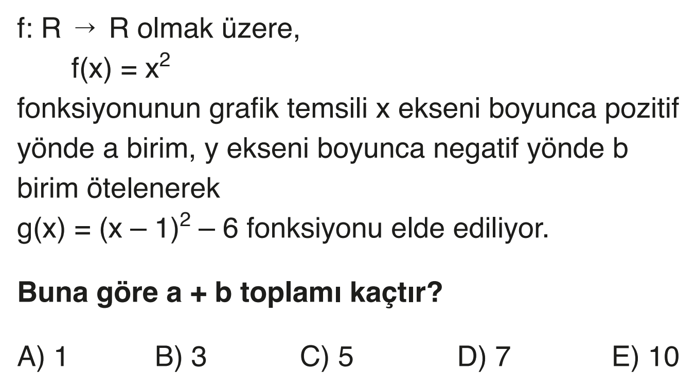
Çözüm
- $a$ birim sağa: $(x-a)^2$; $b$ birim aşağı: $(x-a)^2-b$.
- $(x-1)^2-6$ ile karşılaştırınca $a=1$, $b=6$.
- $a+b=7$ (D).
Cevap: D
Soru 2Cevap: D
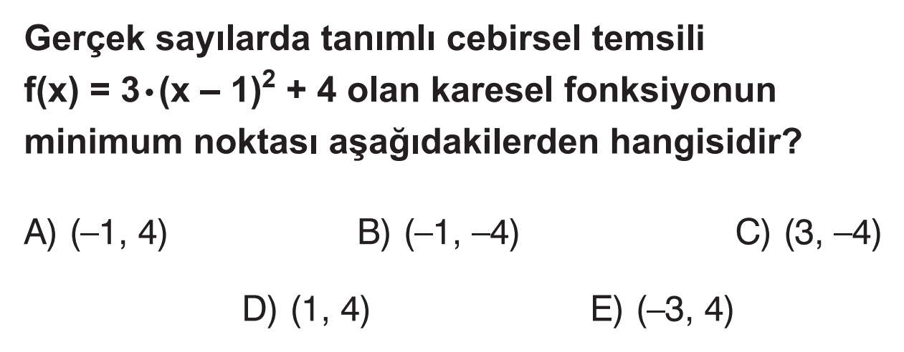
Çözüm
- $a(x-r)^2+k$ biçiminde tepe noktası $(r,k)$.
- $3(x-1)^2+4$: $r=1$, $k=4$; $a=3\gt0$ olduğundan bu nokta minimum noktadır.
- $(1,4)$ (D).
Cevap: D
Soru 3Cevap: E
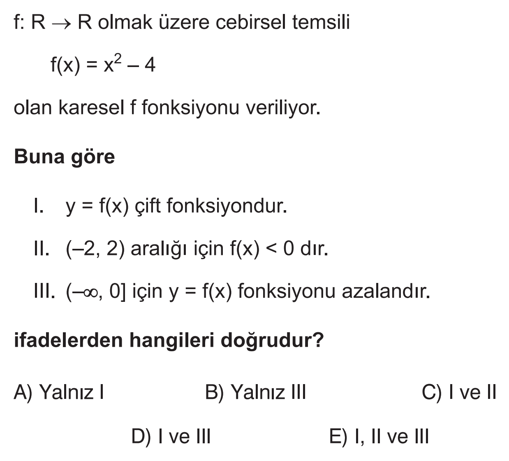
Çözüm
- $(-x)^2-4=x^2-4$: çift (I).
- Sıfırlar $\pm2$; aralarında grafik eksenin altında: $(-2,2)$'de negatif (II).
- Tepe $x=0$, kollar yukarı: $(-\infty,0]$'da azalan (III). Cevap E.
Cevap: E
Soru 4Cevap: C
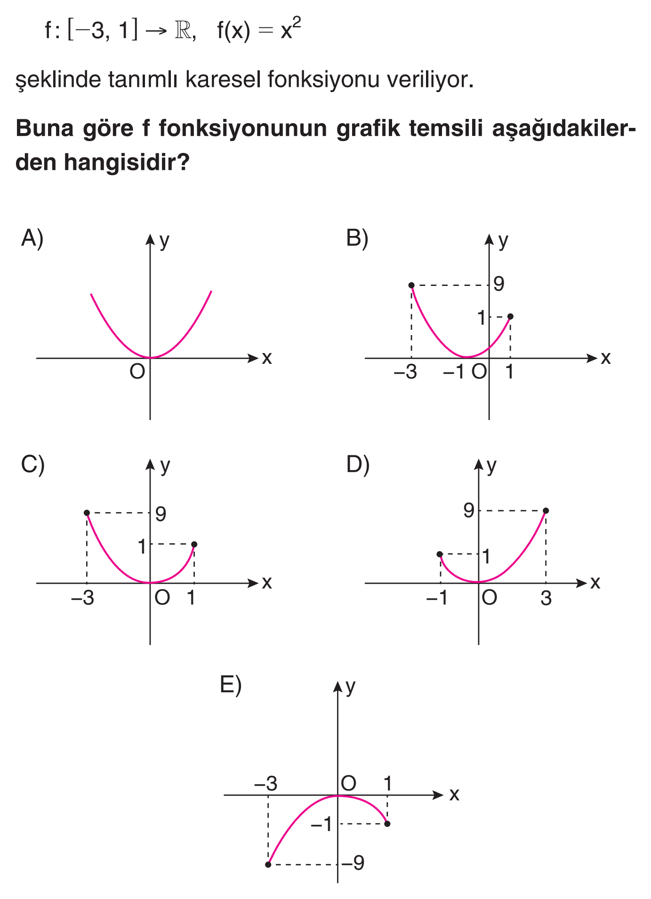
Çözüm
- $f(-3)=9$, $f(0)=0$, $f(1)=1$.
- Grafik $(-3,9)$'dan orijine iner, sonra $(1,1)$'e çıkar.
- Bu parça C'dedir.
Cevap: C
Soru 5Cevap: B
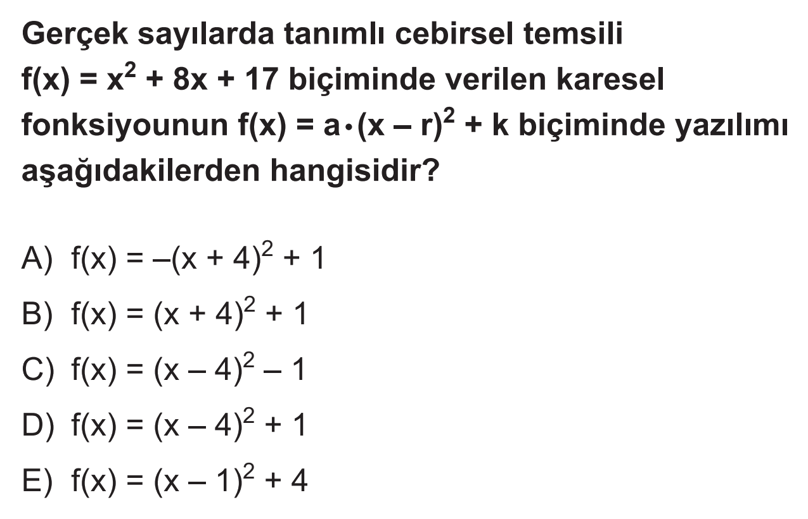
Çözüm
- $x^2+8x+17=(x^2+8x+16)+1$.
- $=(x+4)^2+1$.
- B.
Cevap: B
Soru 6Cevap: B
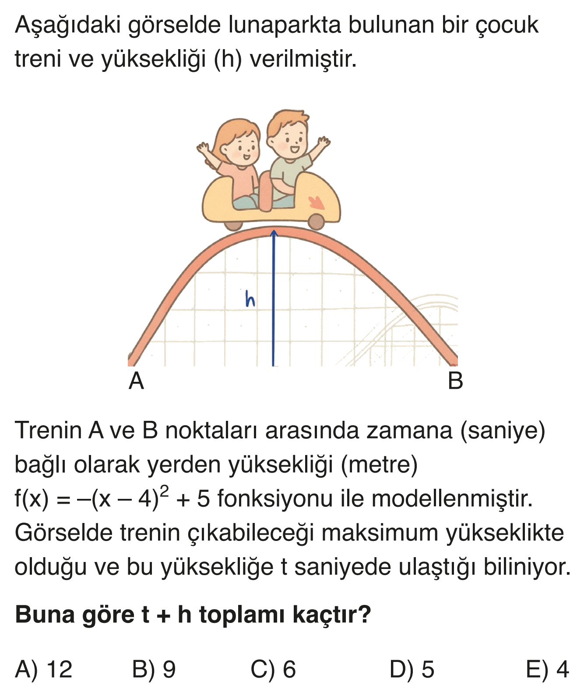
Çözüm
- $f(x)=-(x-4)^2+5$'in tepe noktası $(4,5)$.
- En yükseğe $t=4$ saniyede, $h=5$ metreye çıkar.
- $t+h=9$ (B).
Cevap: B
Soru 7Cevap: B
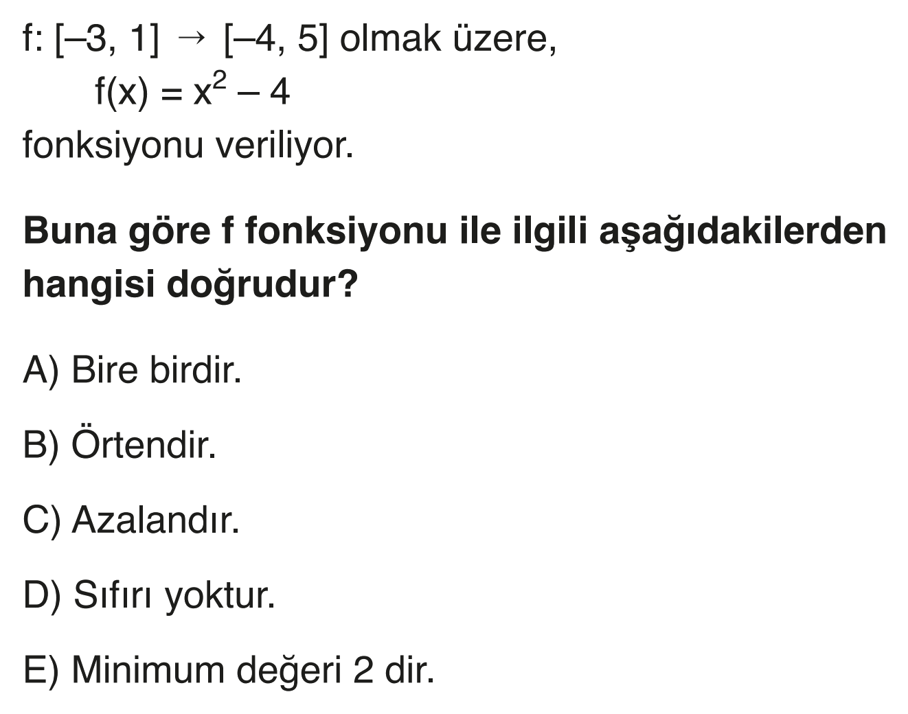
Çözüm
- $f(-1)=f(1)=-3$: bire bir değil.
- En küçük değer $f(0)=-4$, en büyük $f(-3)=5$: görüntü $[-4,5]$ = değer kümesi, örten.
- Doğru olan B.
Cevap: B
Soru 8Cevap: D
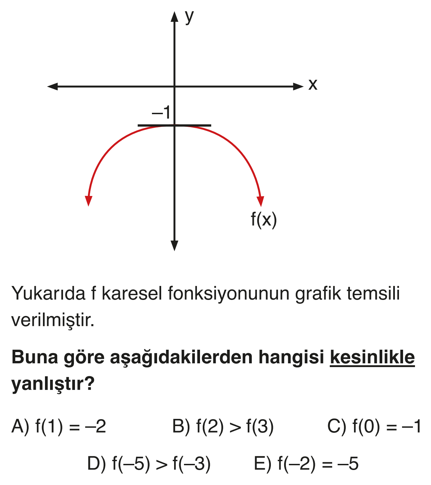
Çözüm
- Tepe noktası $(0,-1)$, kollar aşağı.
- Tepenin solunda $f$ artandır: $-5\lt-3\Rightarrow f(-5)\lt f(-3)$.
- $f(-5)\gt f(-3)$ kesinlikle yanlıştır (D).
Cevap: D
Soru 9Cevap: D
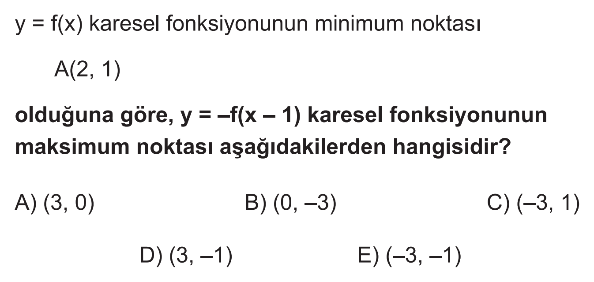
Çözüm
- $f(x-1)$: grafik 1 birim sağa; minimum noktası $(3,1)$.
- $-f(x-1)$: $x$ eksenine göre yansıma; minimum noktası maksimum olur, $y$ işaret değiştirir.
- Maksimum noktası $(3,-1)$ (D).
Cevap: D
Soru 10Cevap: C
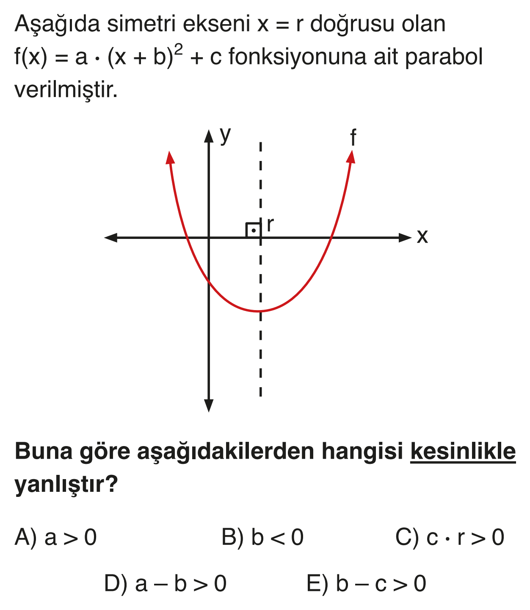
Çözüm
- Kollar yukarı: $a\gt0$; simetri ekseni $x=-b=r\gt0\Rightarrow b\lt0$.
- Tepe noktası $x$ ekseninin altında: $c\lt0$.
- $c\lt0$, $r\gt0\Rightarrow c\cdot r\lt0$: kesinlikle yanlış olan C.
Cevap: C
Soru 11Cevap: B
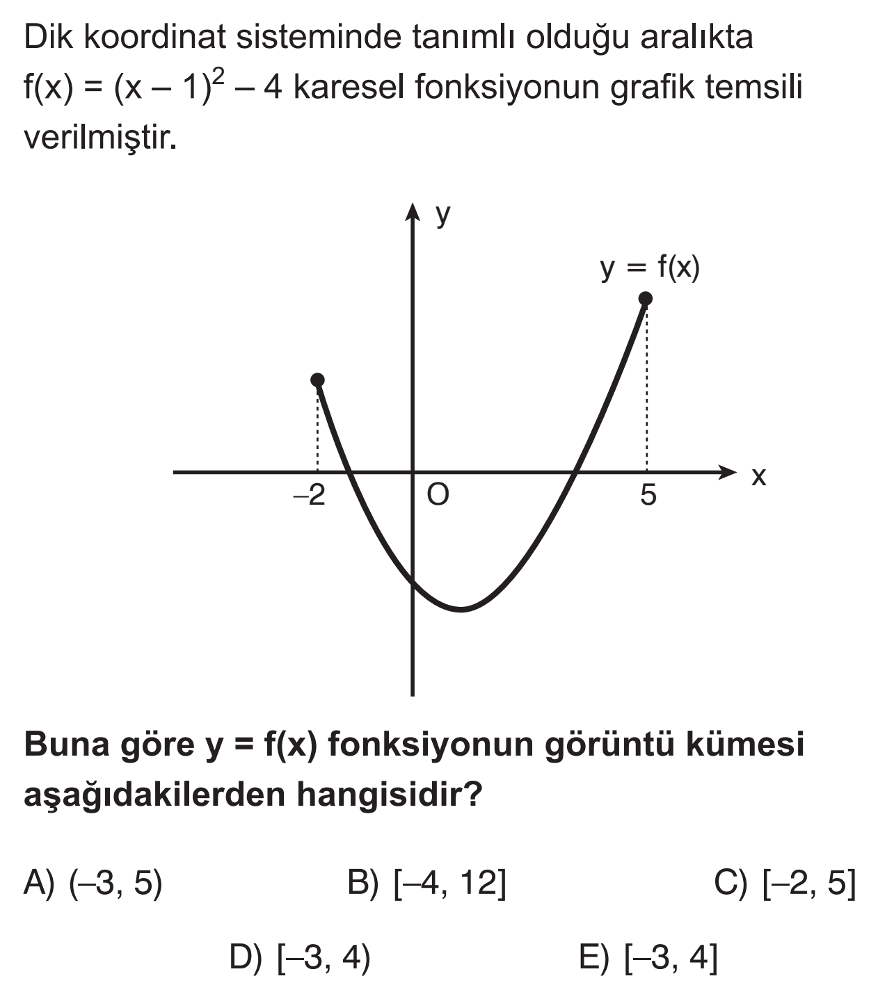
Çözüm
- Tepe $(1,-4)$, $[-2,5]$ aralığının içinde: en küçük değer $-4$.
- Uçlar: $f(-2)=9-4=5$, $f(5)=16-4=12$.
- Görüntü kümesi $[-4,12]$ (B).
Cevap: B
Soru 12Cevap: E
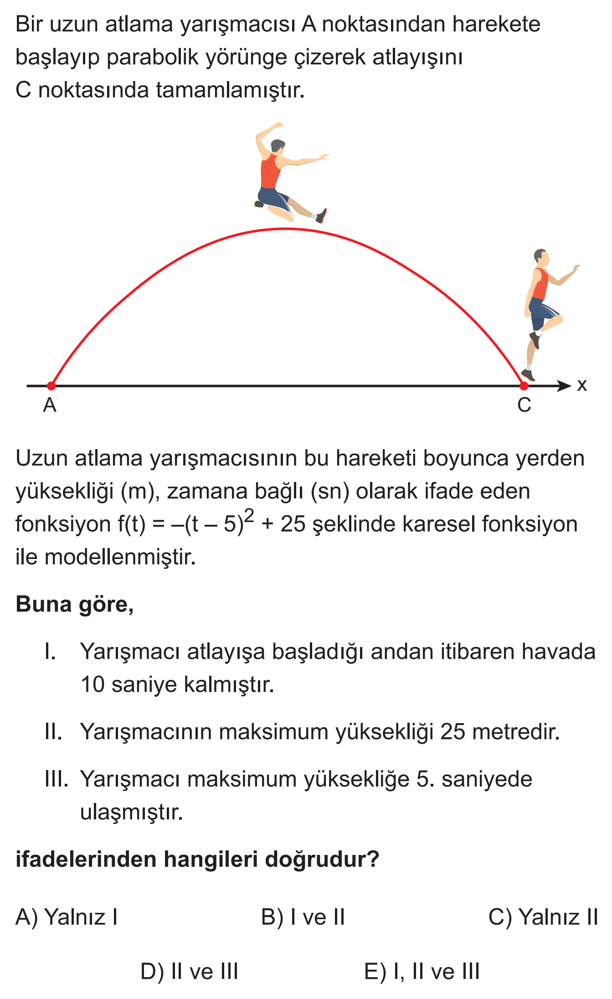
Çözüm
- $f(t)=-(t-5)^2+25=0\Rightarrow t=0$ ya da $t=10$: havada $10$ saniye (I).
- Tepe noktası $(5,25)$: en yüksek $25$ m (II), $5$. saniyede (III).
- Hepsi doğru (E).
Cevap: E
Soru 13Cevap: D
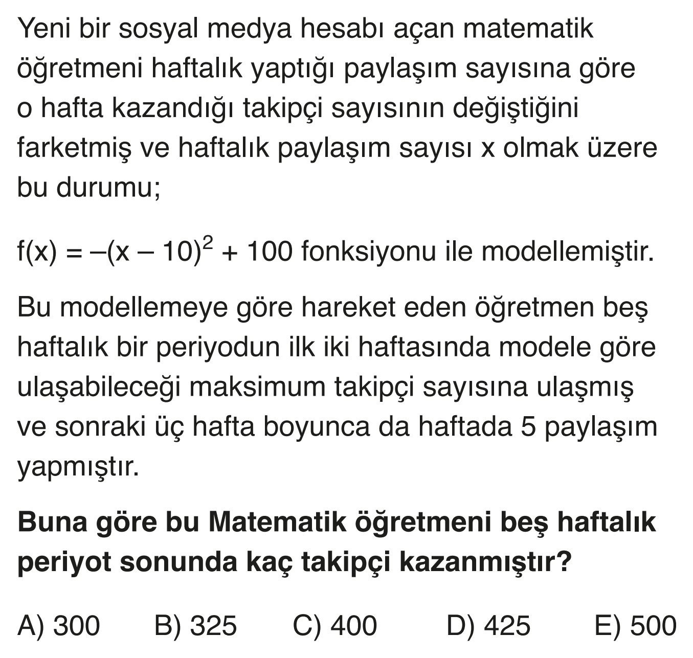
Çözüm
- En çok takipçi tepe noktasında: $x=10$ paylaşımda $100$; ilk iki hafta $200$.
- Sonraki haftalar $f(5)=-25+100=75$; üç hafta $225$.
- Toplam $425$ (D).
Cevap: D
Soru 14Cevap: E
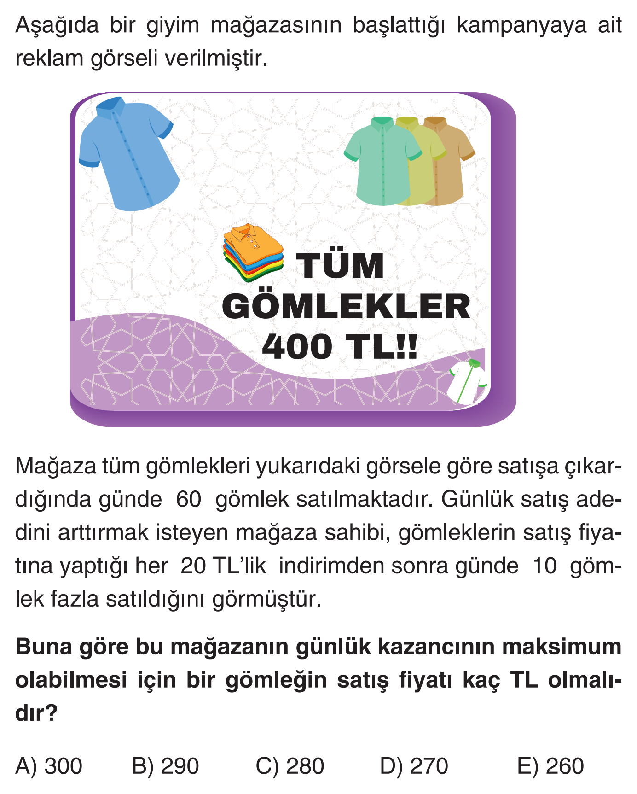
Çözüm
- $n$ indirimde fiyat $400-20n$, satış $60+10n$.
- Kazanç $(400-20n)(60+10n)=200(20-n)(6+n)$; kökler $20$ ve $-6$, tepe $n=7$.
- Fiyat $400-140=260$ TL (E).
Cevap: E
Soru 15Cevap: A
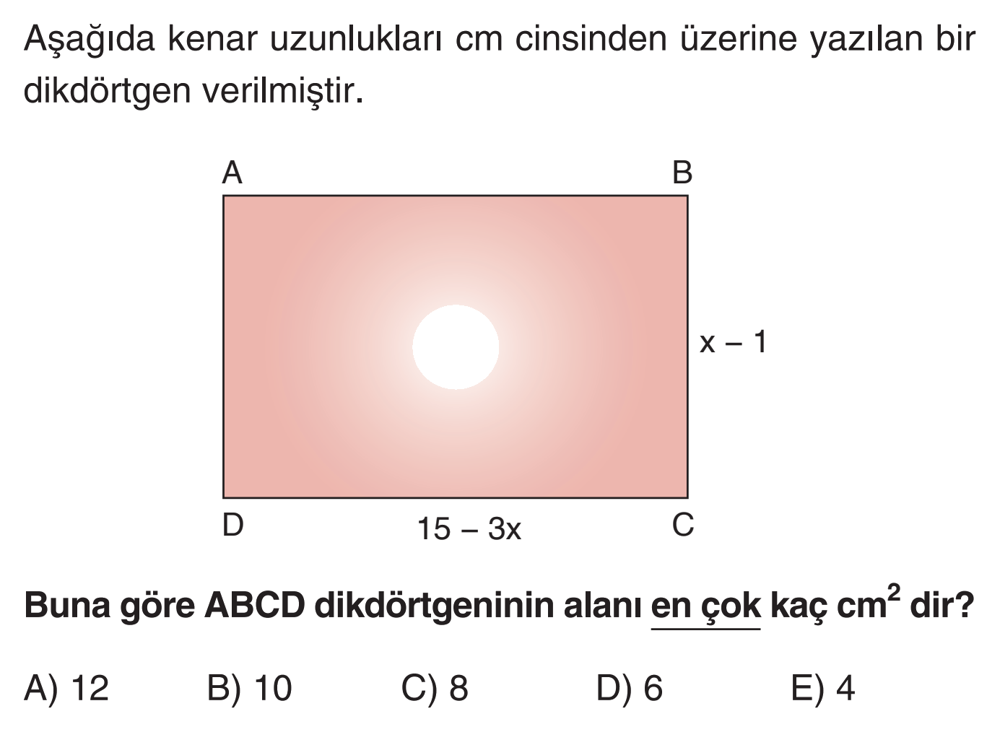
Çözüm
- Alan $A(x)=(15-3x)(x-1)=-3(x-5)(x-1)$.
- Kökler $1$ ve $5$; kollar aşağı, tepe orta noktada: $x=3$.
- $A(3)=6\cdot2=12$ cm² (A).
Cevap: A
Soru 16Cevap: B
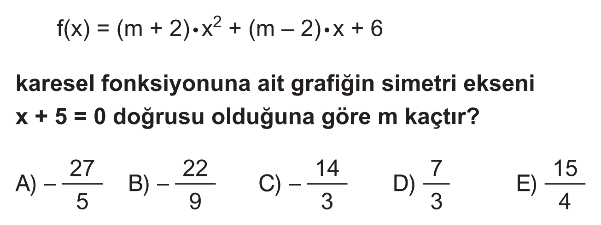
Çözüm
- Simetri ekseni $x=-\dfrac{b}{2a}=-\dfrac{m-2}{2(m+2)}$; $x+5=0\Rightarrow x=-5$.
- $\dfrac{m-2}{2(m+2)}=5\Rightarrow m-2=10m+20$.
- $m=-\dfrac{22}9$ (B).
Cevap: B
Soru 17Cevap: D
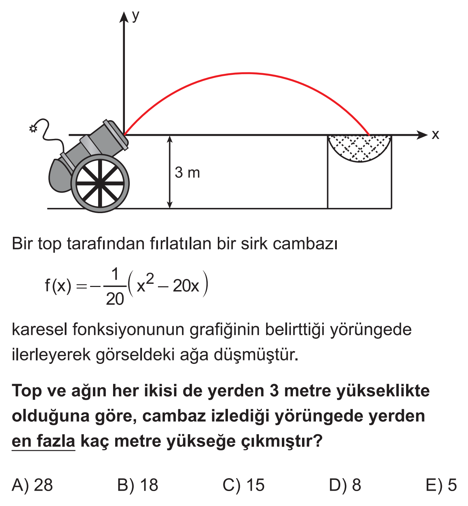
Çözüm
- $f(x)=-\dfrac1{20}(x^2-20x)=-\dfrac1{20}(x-10)^2+5$.
- Yörüngenin top ağzına göre en büyük yüksekliği $5$ m.
- Top ağzı yerden $3$ m yukarıda: en fazla $3+5=8$ m (D).
Cevap: D
Soru 18Cevap: A
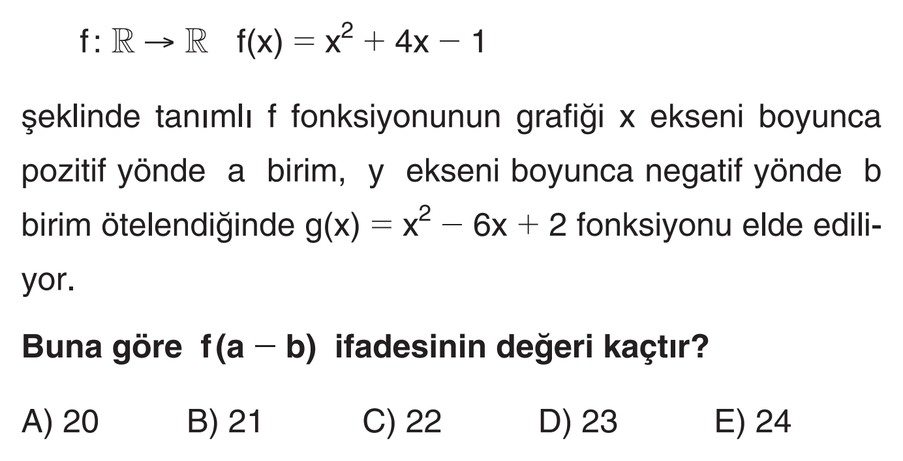
Çözüm
- $g(x)=(x-a)^2+4(x-a)-1-b=x^2+(4-2a)x+a^2-4a-1-b$.
- $4-2a=-6\Rightarrow a=5$; $25-20-1-b=2\Rightarrow b=2$.
- $f(a-b)=f(3)=9+12-1=20$ (A).
Cevap: A
Soru 19Cevap: E
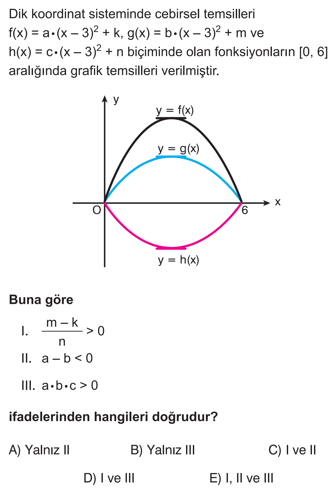
Çözüm
- Üç grafik de $(0,0)$ ve $(6,0)$'dan geçer: $9a+k=0$, $9b+m=0$, $9c+n=0$.
- $f$ ve $g$ aşağı açık ($a,b\lt0$), $f$ daha yüksek: $k\gt m\Rightarrow a\lt b$, II doğru; $h$ yukarı açık: $c\gt0$, $n\lt0$.
- $\dfrac{m-k}n=\dfrac{9(a-b)}{-9c}\gt0$ (I) ve $abc\gt0$ (III). Cevap E.
Cevap: E
Soru 20Cevap: C
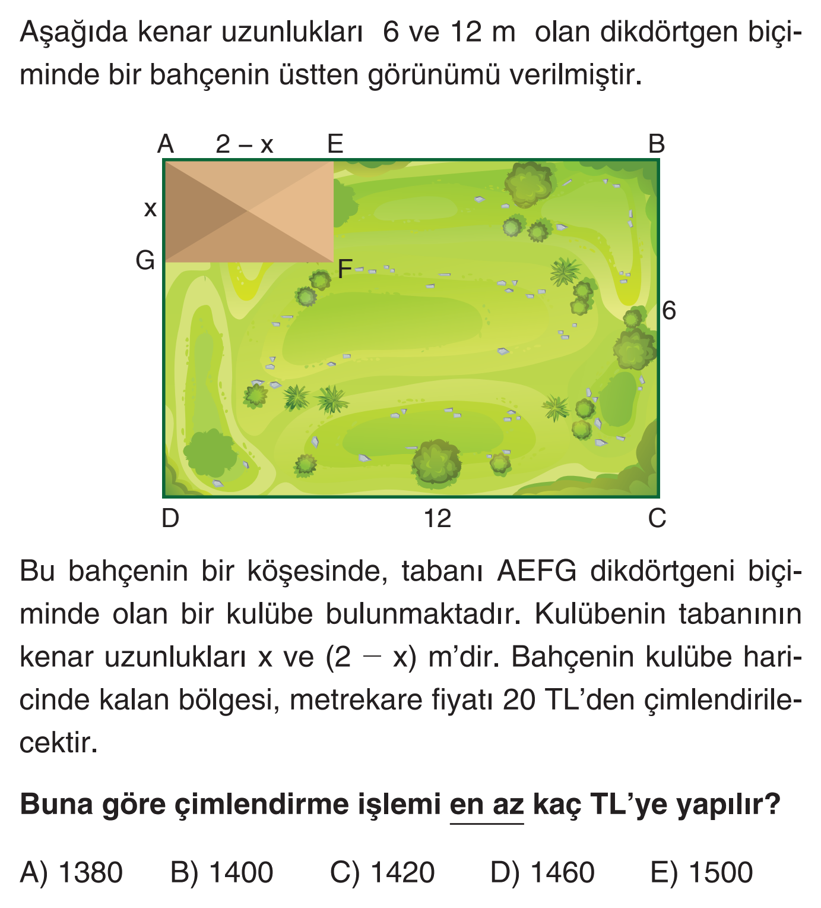
Çözüm
- Çimlenecek alan $72-x(2-x)=x^2-2x+72$.
- $=(x-1)^2+71$: en az $71$ m², $x=1$'de.
- Maliyet $71\cdot20=1420$ TL (C).
Cevap: C